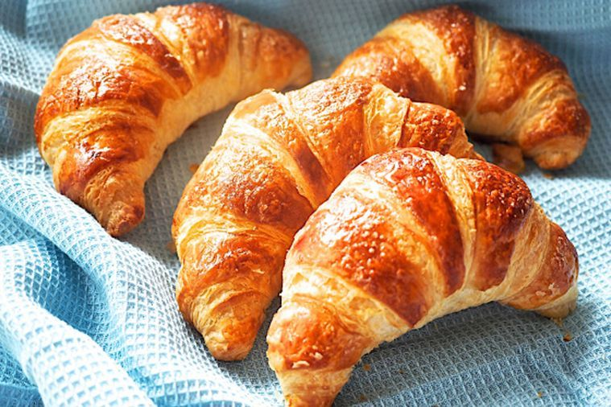

Croissant
What is a croissant?
A croissant is a French pastry that has the shape of a crescent moon, and it is from its shape that its name comes.
Its origins
The croissant, although considered a product of French gastronomy, has origins in Central/Eastern Europe.
In fact, the kipferl is believed to be the ancestor of the French croissant. Its existence is documented in Austria as early as the 13th century.
However, according to historians, the current croissant recipe only became a French culinary symbol in the 20th century, after Parisian bakers replaced the kipferl's brioche dough with a typically French leavened puff pastry.
Source: Wikipedia.fr